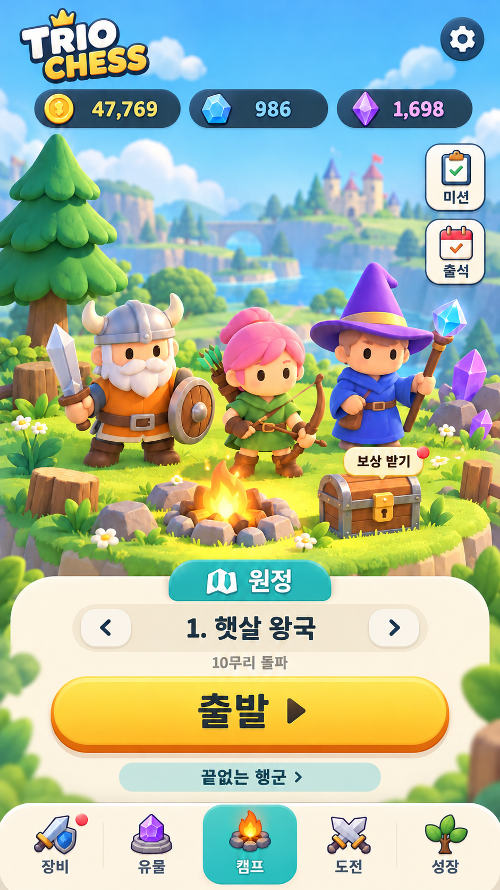
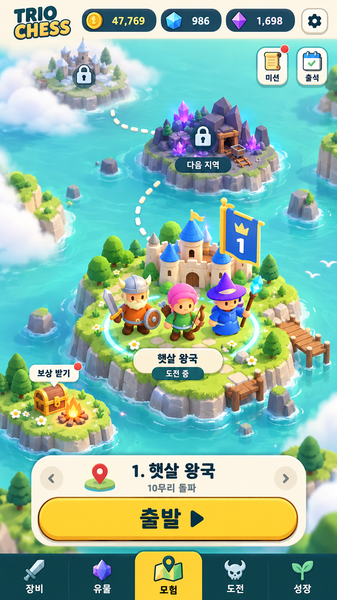
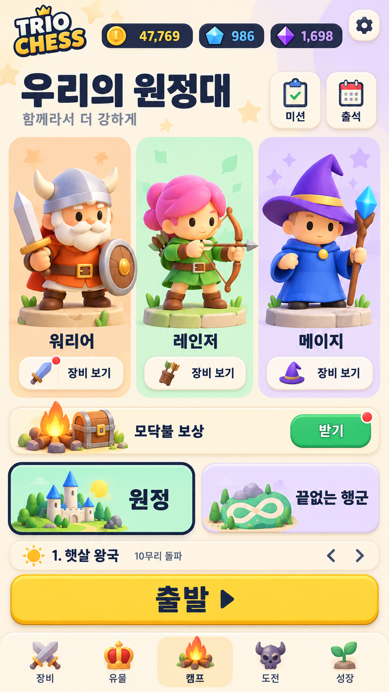
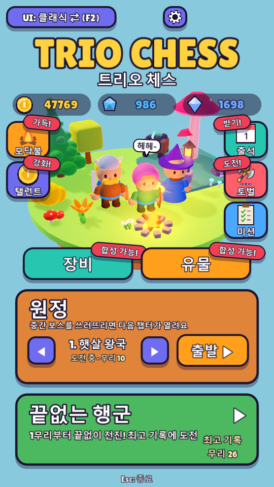

현재 로비를 기준으로 캐주얼 모바일 게임의 정보 위계와 형태를 연구한 3가지 방향입니다.이미지를 누르면 크게 볼 수 있습니다. 리서치·출처·기능 동선 · 제작 프롬프트
세 영웅과 캠프가 주인공.기존 디오라마를 살리고 출발 버튼의 위계를 정리합니다.

다음 목적지가 보이는 챕터 지도.현재 지역과 해금 목표를 하나의 경로로 연결합니다.

세 영웅의 준비 상태를 한눈에.캐릭터 카드와 작은 모드 선택으로 정비·출발을 묶습니다.

최신 TrioChess.exe의 내장 캡처 기능으로 촬영했습니다. 테스트 저장을 사용하므로 재화는 실 저장과 다를 수 있습니다.

아트·레이아웃 탐색용 이미지입니다. 기존 게임 코드는 변경하지 않았습니다. 작은 한글과 수치, 아이콘은 후속 UI 제작에서 다시 조판합니다. 공개 자료의 캡처 시점과 최신성 한계는 리서치 문서에 따로 기록했습니다.